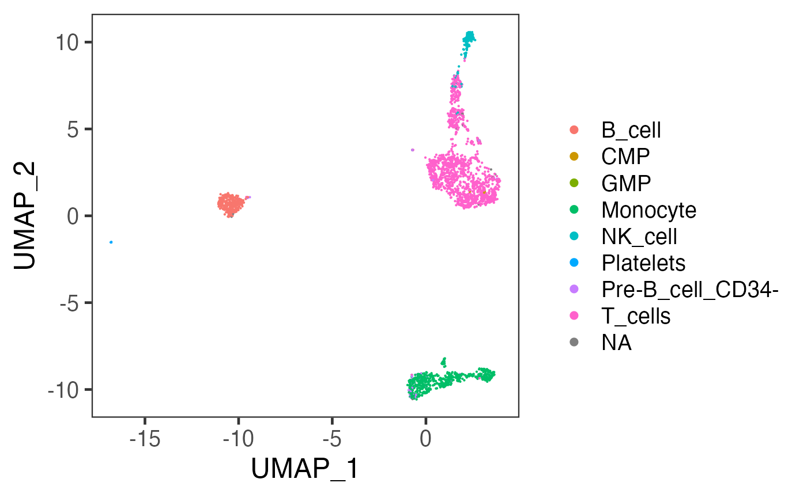

Cell Type Labeling
Yichen Wang
Source:vignettes/articles/cell_type_labeling.Rmd
cell_type_labeling.RmdIntroduction
The methods for labeling the cell type for single-cell RNA-sequencing (scRNAseq) data varies a lot. Including using a labeled reference dataset as the training set and classifying the test data by cluster or individual cells, or using a prior knowledge of the projection between marker gene sets and specific cell types and labeling the cells basing on detected markers. Currently, SCTK only supports using SingleR[1] for cell type labeling, which works with the first approach as previously mentioned. We are planning to add more methods that annotate cells in various ways.
SingleR is an automatic annotation method for scRNAseq data. Given a reference dataset of samples (single-cell or bulk) with known labels, it labels new cells from a test dataset based on similarity to the reference. The only prerequisite for using this method is a labeled reference dataset, and we have already enabled automated caching of online datasets, while users can always use their own data in the console analysis.
To view detailed instructions on how to use this method, please select ‘Interactive Analysis’ for using SingleR in shiny application or ‘Console Analysis’ for using this method on R console from the tabs below:
Workflow Guide
Entry

Users should enter the page as instructed in the screenshot above, by clicking on “Differential Expression & Cell Type Labeling” first and choosing “Cell Type Labeling” sub-option next.
Usage


There are 6 basic widgets that users need to work with before reaching to the result:
- Select assay - Select the feature expression matrix for the comparison against the reference dataset. This matrix has to be a log-normalized assay. (How to normalize an assay with SCTK)
- Choose a reference - Select the curated online reference dataset. There are multiple options that cover the need of analyzing data from human and mouse and from different tissues. The link at the bottom will pop users to the detail of the reference, which is currently chosen.
- Labeling level - For most of the provided references, there will be 3 levels of annotations - “main” for main cell types, “fine” for more subtypes, and with “ont”, subtypes are mapped to Cell Ontology.
- Feature type - Choose the identifier type that matches with users’ dataset. Unfortunately, the references are only annotated with symbols and ensembl IDs. Therefore, users working with other types of IDs might need to do the conversion prior to using this functionality. Automated conversion maybe added in future versions of SCTK.
- Label by - Whether to label each cell individually or label each pre-identified cluster. (How to cluster cells)
- 5.1. Use cluster label - Choose the cell level annotation that represent the clustering result. This option will only pop out when users choose “Clusters” in “Label by.”
- Label - The button to trigger the algorithm. Click on this to run the cell type labeling process.
The result will not be pop out directly, but three levels of cell annotation will be inserted to the background object. They will all have the same prefix as "SingleR_{reference abbr}_{annotation level}_", then "score", "first.labels", "labels" and "pruned.labels", respectively. "first.labels" refers to the labeling initially indicated by the scores, "labels" is fine-tuned, and "pruned.labels" is the pruned result.
Visualization
SCTK does not have a quick visualization at this point. But users can go to the CellViewer tab to create a scatter plot using the pre-generated embedding and color it with the cell type labeling result.
Preprocessing
As mentioned previously in this article, performing cell type labeling with SingleR does not require sophisticated preprocessing, but only a reference dataset that covers the expected cell types. Now that we have already incorporated many curated online dataset that SingleR recommends, users only need to log-normalize the feature expression matrix to match what is in the reference.
Here, we use “PBMC3k” dataset provided by CellRanger as an example.
library(singleCellTK)
sce <- importExampleData("pbmc3k")
sce <- runNormalization(inSCE = sce, normalizationMethod = "logNormCounts", outAssayName = "logcounts", useAssay = "counts")Running SingleR
Then users can use runSingleR() to invoke the algorithm. Here we choose to use useBltinRef = "hpca" to set the reference, which refers to Human Primary Cell Atlas Data [2] and this will be automatically cached to users’ local. We set level = "main" to label the PBMC3k dataset with general cell types. Users can also set it to "fine" for more subtypes, and "ont" for Gene Ontology information. For more information, please click on the function name and see the reference page of this function.
sce <- runSingleR(inSCE = sce, useAssay = "logcounts", useBltinRef = "hpca", level = "main", featureType = "symbol")Four results from SingleR will be stored in colData() slot with the same prefix as "SingleR_{reference abbr}_{annotation level}_", then "score", "first.labels", "labels" and "pruned.labels", respectively. "first.labels" refers to the labeling initially indicated by the scores, "labels" is fine-tuned, and "pruned.labels" is the pruned result.
Besides, users can also use their own labeled reference datasets wrapped in a SingleCellExperiment object. Refer to argument useSCERef and labelColName. Additionally, the labeling can also be done on cluster label if users have already performed clustering on their dataset and have the result stored in colData() slot. Refer to argument labelByCluster.
Visualization
Users can choose to visualize the labeling result on a scatter plot. Here, we provide an example to create a UMAP embedding that can clearly reflect the relationship between cells in 2D, and then color the cells by the labels.
sce <- runNormalization(inSCE = sce, useAssay = "logcounts", scale = TRUE, outAssayName = "logcounts_scaled")
sce <- runSeuratFindHVG(inSCE = sce, useAssay = "counts", hvgMethod = "vst")
sce <- getTopHVG(inSCE = sce, method = "vst", n = 2000, altExp = "hvg")
sce <- runDimReduce(inSCE = sce, method = "scaterPCA", useAssay = "logcounts_scaled", useAltExp = "hvg", reducedDimName = "PCA")
sce <- runDimReduce(inSCE = sce, method = "scaterUMAP", useReducedDim = "PCA", reducedDimName = "UMAP")
plotSCEDimReduceColData(inSCE = sce, colorBy = "SingleR_hpca_main_pruned.labels", reducedDimName = "UMAP")